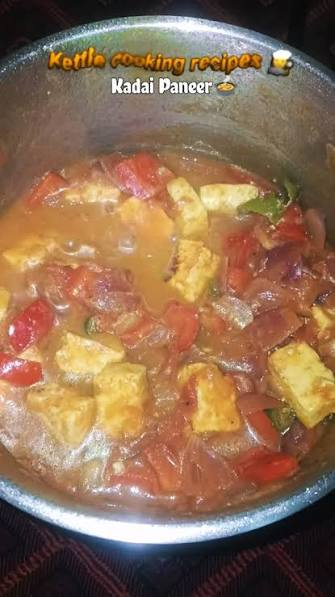

Paneer Butter Masala

Prep time: 10 mins Cook time: 20 mins Serves: 3-4
Ingredients
- 250g paneer, cubed
- 2 tomatoes, chopped
- 1 onion, chopped
- 1 tbsp butter and 1 tbsp oil
- 1 tbsp ginger-garlic paste
- 1/2 cup fresh cream
- 1 tsp kasuri methi (dried fenugreek leaves)
- 1 tsp red chili powder
- 1/2 tsp garam masala
- Salt and a pinch of sugar to taste
Steps
- Heat butter and oil together, fry the onion until soft.
- Add ginger-garlic paste and cook for a minute.
- Add the chopped tomatoes and spices, cook until the oil separates.
- Add a little water and simmer for 5 minutes.
- Stir in the cream and kasuri methi, then add the paneer cubes and simmer 5 more minutes.
- Serve with naan or jeera rice.
Backstory: Another banger recipe from my mother. My favorite out of any other recipe. (Original recipe by Chef Mummy.)